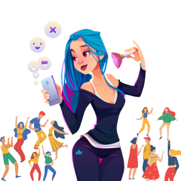

<!DOCTYPE html>
<html lang="en">

<head>
    <!-- Google tag (gtag.js) -->
    <script async src="https://www.googletagmanager.com/gtag/js?id=G-WT5G7D67SS"></script>
    <script>
        window.dataLayer = window.dataLayer || [];
        function gtag() { dataLayer.push(arguments); }
        gtag('js', new Date());

        gtag('config', 'G-WT5G7D67SS');
    </script>
    <meta charset="UTF-8">
    <meta name="viewport" content="width=device-width, initial-scale=1.0">
    <title>SAI</title>
    <link rel="canonical" href="https://www.digitalsai.net/pags/marketing-successful-keys" />
    <meta content="" description="the most professional keys to create the successful campaigns">
    <link rel="icon" type="image/png" sizes="32x32" href="../imgs/android-chrome-512x512.png">
    <link rel="stylesheet" href="../css/styles.css">
    <link rel="stylesheet" href="css/normalize.css">
    <link rel="stylsheet"
        href="https://fonts.googleapis.com/css2?family=Nerko+One&family=Open+Sans:wght@300;400&display=swap">
    <link rel="preconnect" href="https://fonts.gstatic.com">
    <link href="https://fonts.googleapis.com/css2?family=Poppins:wght@300;400&display=swap" rel="stylesheet">
    <script src="https://kit.fontawesome.com/7112eb4062.js" crossorigin="anonymous"></script>
</head>

<body>
    <!--start landing page-->


    <nav>
        <div class="logo">
            
        </div>

        <label for="btn" class="icon"><span class="fa fa-bars"></span></label>
        <input id="btn" type="checkbox">

        <ul>
            <li><a class="padding" href=" ../">home</a></li>

            <li> <label for="btn-1" class="show">about sai +</label>
                <a class="padding" href=" ../#about-us">about-us</a>
                <input type="checkbox" id="btn-1">
                <ul>
                    <li><a href=" ../#why-sai">why sai</a></li>
                    <li><a href=" ../#feedbacks">feedbacks</a></li>

                </ul>
            </li>
            <li>
                <label for="btn-2" class="show">Services +</label>
                <a class="padding" href="#our-services">our services</a>
                <input type="checkbox" id="btn-2">
                <ul>
                    <li><a href="content-creation-service">content creation </a></li>
                    <li><a href="ux-design-service">ux design</a></li>
                    <li><a href="seo-service">SEO</a></li>
                    <li><a href="web-development-service">websites designing</a></li>
                    <li><a href="brand-identity-designing-service">brand identity designing</a></li>
              
                    <li><a href="trademark-registration-service">legal services</a></li>

                </ul>

            </li>
            <li>
                <label for="btn-3" class="show">resources +</label>
                <a class="padding" href="#">resources</a>
                <input type="checkbox" id="btn-3">

                <ul>
                    <li><a href="resource">digital marketing</a></li>
                    <li><a href="content-marketing">content marketing</a></li>
                    <li><a href="advertising">social media advertising</a></li>
                    <li><a href="email-marketing">e-mail marketing</a></li>
                    <li><a href="marketing-successful-keys">the successful campaigns</a></li>

                </ul>
            </li>
            <li><a class="padding" href="#let's talking">let's talking</a></li>
        </ul>

    </nav>
    <div class="resource">
        
    </div>

    <div class="candy-wrapper">
        <div class="main" id="what-are-the-successful-campaigns-keys">
            <div class="section" id="the-native-content">

                <h4>before beginning the most professional keys to create the successful campaigns you advice you to
                    visit our previous resources and guides
                    about digital Marketing </h4>
                <ul>
                    <li><a href="content-marketing" target="_blank">content marketing guide</a></li>
                    <li><a href="advertising" target="_blank">social media advertising guide</a></li>
                    <li><a href="email-marketing" target="_blank">email marketing guide</a></li>

                </ul>
                <h2>what are the successful campaigns keys ?</h2>
                <h3>1/use the native content</h3>
                <p>

                    Other terms for native advertising are native ad, native content, sponsored content and contextual
                    advertising.<br>
                    Native advertising is a more recent trend. Native advertising is when you pay for placement of
                    content on a third party site in a format similar to content on the site it is displayed on.<br>
                    It is comparable to ‘advertorials’ in magazines.<br>
                    The idea is that a marketer can blend its ad in the content of a site
                    so that it does not stand out as much as an ad, but is perceived more as part of the content of the
                    site.<br>

                </p>
                <p>
                    Native ads can be effective. It doesn’t disrupt the user experience and offers helpful information
                    in a format similar to the other content on the site,<br>
                    so users engage with more than they would with, say, a banner ad.
                </p>
                <p> Let’s imagine you’re passionate about mobiles, so you’ve created a youtube channel where you do
                    mobiles reviews. Now, you want to market it. Think about the people who might be interested in a
                    mobiles review video,
                    and what else they might be looking at online... like mobiles stores websites, official mobile sites
                    or mobile forums. The pages where your customers are is also where you should be.
                    Alternatively, if you doen’t know where you want to post yet, you could contact a network that
                    matches businesses with ad spaces Like us.</p>

                <div class="sorty"></div>


            </div>


            <div class="section" id="A/B-testing">

                <h3>2/use A/B testing</h3>
                <h4>what is the A/B testing strategy ?</h4>
                <p>
                    sometimes called Split testing,
                    is a method of testing through which advertise or marketing elements (such as content,
                    headlines,images,
                    layout, etc) that
                    brings a better results such as (conversion rate/Clickthrought rate/Demo requests/sales)
                </p>


                <h4>what elements should i test and optimize ?</h4>
                <ul>
                    <li>offers:Examples of offers to test include ebook, webinars, discount codes,
                        coupons, sales, demos, and more.for instance,we
                        have found that discount codes perform better than "buy one get one " offer in converting
                        visitors to leads, but "buy one get one " offer do better than discount codes in converting
                        leads to customers. That has led us to maintain a balanced mix of
                        content types.</li>

                    <li>
                        a placement of A Call-to-Action button:The argument over where the “best” place to put a CTA is
                        never
                        ending. Some say the best place to a put a CTA is in the top left
                        hand of a page. After all, we start reading from left to right and from
                        top to bottom
                        however,we see that Try A/B testing the right ,pop-up, exit flows, and more.
                        and left side of the page. Later, try testing in-text CTAs</li>

                    <li>The size of a A Call-to-Action button:Remember: bigger CTA’s will help draw attention to the
                        desired
                        action you want your user to take, but if it’s too big, it can also
                        overpower your content and decrease your conversion rates.</li>

                    <li>multimedia : if you use any format of content like(image,video,<br>
                        infographics....etc) create two versions to see which one performs better
                    </li>

                    <li>the ideal color for A Call-to-Action button:you can choose either using of your brand color or
                        using of brightness color</li>

                    <li>Timing:You could try sending emails on Tuesdays and Saturdays. Or, try sending emails weekly and
                        monthly. See what your audience seems to prefer, and then adjust.</li>
                    <li>Sender:in e-mail marketing studies showed that messages coming from a personal sender name
                        receive higher CTR rate than messages from a generic sender
                        name.</li>
                    <li>subject line :Let’s say you are sending an email announcing a new product, but you’re not sure
                        what subject line to use. You can send half of your customers, Version A of the subject line,
                        and the other half Version B.

                        Then, look at which email had a higher “open rate”. That is the measure of how many people open
                        your emails, compared to how many emails were delivered. Whichever version had a higher open
                        rate, wins!</li>
                    <li>Target Group:you can change targetting people by their demographics,hopies,</li>

                </ul>

                <h4>how can I implement this strategy?</h4>
                <p>Only test one element at a time. For example, don’t
                    test the landing page image and the copy on the page and try to
                    run your test it’ll muddle your
                    results. you may not be
                    able to pinpoint which changes caused that improvement.</p>
                <p>so A/B test include 5 main stages As shown in the picture</p>

                <p>these steps are taken from <a href="https://blog.hootsuite.com/social-media-ab-testing/"
                        target="_blank">here</a>
                <ol>
                    <li>Choose an element to test.</li>
                    <li>Dig into existing knowledge for ideas about what will work best—but never be afraid to challenge
                        assumptions.</li>
                    <li>Create two variations based what your research (or your gut) tells you, remembering to have only
                        one element that differs between the variations.</li>
                    <li>Show each variation to a segment of your followers.</li>
                    <li><a href="https://blog.hootsuite.com/how-to-use-utm-parameters/" target="_blank"
                            rel="noopener noreferrer">Track</a> and analyze your results.</li>
                    <li>Choose the winning variation.</li>
                    <li>Share the winning variation with your entire list, or test it against another small variation to
                        see if you can improve your results further.</li>
                    <li>Share what you learn throughout your organization to build a library of best practices for your
                        brand.</li>
                    <li>Start the process over again.</li>
                </ol>

                <div class="sorty"></div>

            </div>


            <div class="section" id="optimize-landing-pages">

                <h3>3/optimize landing pages</h3>
                <h4>what is the landing page?</h4>
                <p>A landing page is a web page that allows you to capture a visitor’s
                    information through a lead form or sell your products– it’s where the visitor “lands” after
                    clicking on a call-to-action which is In your ads</p>
                <p>As a rule of thumb, a landing page usually includes a compelling header,
                    interesting copy, minimal navigation, and an optimized form</p>
                <p>here is an example about landing page which is the home page of the website it has the most hight
                    converting than other which is more suiable for selling products or downloads or free trial

                </p>
                <div class="sorty"></div>
                <p> There are several key components that make a landing page effective
                    for converting more visitors into leads. Let’s explore some of the key
                    techniques for building a successful landing page.</p>
                <div class="sorty"></div>
                <h4>there are 10 elements of a high-converting landing page:</h4>
                <ol>

                    <li>Hidden Navigation with website logo: hide any
                        top and side navigation bars from that page. You don’t want unnecessary
                        navigation buttons catching your readers’ eye and distracting them from
                        completing your form.
                    </li>
                    <li>Headline:
                        Use
                        your headline to sum up your offer as clearly as possible. If it’s an ebook,
                        say it’s an ebook. If it’s a coupon, say it’s a coupon.</li>
                    <li>Make Context
                        scannable: you need to make the text on your landing page easy to skim</li>
                    <li>value: In many cases, your subheader and context won’t be quite enough to
                        motivate your visitor he or she should make a purchase or download your
                        offer so Use bullet points to emphasize the value and importance of what you have to offer </li>
                    <li>image: include a relevant image on your
                        landing page. Try to match then that image with the offer. </li>
                    <li>Social Sharing Buttons/Links: Enable visitors to easily share your landing pages with their
                        connections
                        by including social media sharing links or buttons</li>
                    <li>form: is the place your page visitors will supply
                        information in exchange for your offer,only ask for information you
                        need</li>
                    <li>Submit Button: This button is the actual call-to-action button on your landing page Avoid using
                        a general word like ‘submit instead indicate exactly what action your visitors must take. If
                        they’re going
                        to receive an ebook, use a word like ‘download.’ If visitors are signing
                        up for a 25% off coupon, use a phrase like ‘access coupon.’ If they’re
                        receiving a free product trial, try using the phrase ‘sign up.’
                    </li>

                </ol>
                <p>here are another resource provided from hubspot about landing page elements optimizing watch it:</p>
                <div class="iframe-container">
                    <iframe width="560" height="315" src="https://www.youtube.com/embed/IZ4nW3ZglVk"
                        title="YouTube video player" frameborder="0"
                        allow="accelerometer; autoplay; clipboard-write; encrypted-media; gyroscope; picture-in-picture"
                        allowfullscreen></iframe>
                </div>

            </div>

            <div class="section" id="influencer-marketing">

                <h3>4/use influencer marketing</h3>
                <div class="content-king">
                    <div class="imgo"></div>
                    <div class="contento">
                        <h4 id="what-is-influencer-marketing">what is influencer marketing?</h4>
                        <p>Influencer marketing is a form of collaboration. A business collaborates with an influential
                            person to promote something. It could be a product, service, or campaign.</p>
                        <p>at these dayes it is considered social content creators with niche audiences can often offer
                            more value to brands. These people have dedicated and engaged groups of followers on social
                            media. They are known simply as “social media influencers.”</p>
                    </div>
                </div>

                <h4 id="Why-is-influencer-marketing-so-effective">Why is influencer marketing so effective?</h4>
                <p>1- The easiest way to build a followers’ base <br>
                    Influencers do the hard work of attracting a wide
                    audience, and when you collaborate with them, you
                    give your brand direct access to that audiences.
                </p>
                <p>2- Consumers trust people like them more
                    than companies<br>
                    consumers skip ads now on dierent platforms.
                    Moreover, %92 of people trust the recommendations of
                    friends and family more than any other type of ads<br>


                </p>
                <h4 id="influencers-cooperation-types">influencers cooperation types</h4>
                <p>this page are taken from <a
                        href="https://www.arabyads.com/category/guides/?utm_medium=cpc&utm_source=google&utm_campaign=egy-english-pmk"
                        target="_blank">arabads</a>
                <div class="sorty"></div>

                <h4 id="Which-influencer-marketing-channel-has-the-most-engagment">Which influencer marketing channel
                    has the most engagment in 2019?</h4>
                <p>The graph shows that 69% of marketers plan to spend more on Instagram, followed by the
                    most important platform for influencer marketing: YouTube, 11% 6 times less than Instagram.</p>

                <div class="sorty"></div>
                <div class="sorty"></div>

                <h4 id="how-to-get-started-influencer-marketing">how to get started influencer marketing</h4>
                <ol>
                    <li> Know who you’re trying to influence:The first step is to define who your audience will be for
                        this specific campaign.</li>
                    <li>Set goals: Marketers want to improve the brand’s
                        image, reach new audiences, and increase audience awareness and
                        awareness of the brand, or maybe promote the launch of new products.
                        Regardless of your influencer’s marketing goal, you must communicate all
                        of your goals to them very clearly, this will help them comprehend what
                        they need to oer and how they would do it
                    </li>
                    <li>evaluate the influencer :Look for non-paid content to keep followers interested, enthusiastic,
                        and engaged Sometimes, social media influencers resort to
                        buying followers (fake accounts and bots) to attract attention. It goes
                        without saying that partnering with these people will only cost you
                        money without any real return<br>
                        take a look of How often are they sharing sponsored content?</li>
                    <li>relevance:A relevant influencer shares content relevant to your business and industry. They need
                        to have an audience that aligns with your target market.<br>
                        Bigger isn’t always better. A huge follower count is meaningless if those followers aren’t
                        interested in your offer. And a smaller follower count can be very powerful if it’s a niche area
                    </li>


                    <li>Consider a long-term cooperation:When collaborating with influencers, make one of your goals to
                        build
                        strong relationships with them on the long run, to work with them in your
                        future campaigns as well. This will help them create better campaigns
                        and will directly aect the return on investment.</li>
                    <li>set your budget: Influencers with extensive reach rightly expect to be paid for their work. Free
                        product might work with nano-influencers, but a larger influencer campaign requires a budget

                        Think about what kind of payment structure makes the most sense for your goals. But be willing
                        to consider the influencer’s needs, too. For example, an affiliate or commission structure might
                        be an option instead of a flat fee, or to reduce the flat fee.</li>

                    <li> Reach out privately, and personally:<br>
                        <p>Once you know who the influencers are in your space, it’s time to approach them. It’s
                            straightforward to approach an influencer. First, show interest. Follow them on their social
                            media channels. If you can, spend time to build a relationship with them. You can do that by
                            engaging with their posts and/or sharing information with them that they may find useful.
                        </p>
                        <p>Their primary objective is to grow their influence, so if you help them to do that, they will
                            be interested in helping you.</p>
                        <p>Ideally you have started a relationship with an influencer, but even if you don’t you’ll need
                            to pitch them on what you have to offer and what you want from them.</p>
                        <p>When you reach out, follow these steps:</p>
                        <p>1. Reach out to individuals only - make a personal connection.</p>
                        <p>2. Use a quick hook to get them interested in working with you - be sure to let them know
                            what’s in it for them.</p>
                        <p>3. Explain your expertise, product, or service.</p>
                        <p>4. Provide topic options that they can use. Influencers have to create a lot of content so
                            the more you can help them with content that’s ready to go and simple for them to share, the
                            more likely it is influencers will be willing to help.</p>
                        <p>5. Keep your pitch short and to the point. Influencers are busy and after all, you’re asking
                            them to do you a favor</p>

                        A direct message is a great place to start. If you can find an email address, try that too
                        Here’s an example outreach email or message.
                    </li>
                    <div class="sorty">
                    </div>
                </ol>


            </div>


            <div class="section" id="trace-your-campigns">

                <h3>5/track your campigns</h3>
                <p>One important part of marketing is measuring results. If you spend time, money and effort creating
                    content and advertising, you will want to be able to measure your results. Whether you are working
                    as a digital marketer and are asked to report on the results of your marketing activity, or if you
                    are marketing your own business, you will want to track what worked and what didn't. Measuring your
                    results can help you to improve your efforts.</p>

                <p>Driving traffic to your site or to a landing page on a site will be an important goal of your
                    marketing activity. Traffic coming to your site is also referred to as in-bound traffic.</p>

                <p>you will want to know which pieces of content you posted, or ads you placed, were responsible for
                    driving traffic to your site. You can achieve this by using UTM codes,</p>

                <h4 id="what-are-utm-codes">what are UTM codes?</h4>
                <p>UTM stands for "Urchin Tracking Module" - Urchin Software Corporation was acquired by Google in 2005
                    and their software became what we now know as Google Analytics.</p>
                <p>UTM codes are labels that Google Analytics and other analytics tools can read and recognize. They
                    consist of little snippets of text added to the end of your URL to help you track the success of
                    your content on the web. An example of UTM codes is highlighted in the URL below in yellow:</p>
                <h4>http://resources.digitalsaii.com<br>
                    /5-keyes-to-successful-campaigns?<br>
                    <span>utm_campaign=blogpost<br>
                        &utm_medium=social<br>
                        &utm_source=facebook</span>
                </h4>
                <p>Whenever you share content, such as the shared post on Facebook in the example above, you'll want to
                    include UTM codes. Adding UTM codes to a URL can help you gather information without having any
                    visible impact on the user. The UTM codes enable an analytics program to track and know that someone
                    arrived at your landing page from a specific source as part of a specific marketing campaign, in
                    this case, your post on Facebook.</p>

                <p>The UTM codes are structured in categories that the analytics tools will recognize. The categories
                    are standardized (you have to use these names), but you can choose what you fill in after the equal
                    sign. Make sure it is something you will recognize.</p>
                <p>there are five categories you can track with UTM codes as follows:</p>
                <ol>
                    <li>Campaign: Give each campaign a name so you can keep track of your efforts. This could be the
                        product name, a contest name, a code to identify a specific sale or promotion, an influencer ID
                        or a tagline..</li>
                    <li>Source:This indicates the social network, search engine, newsletter name, or other specific
                        source driving the traffic.</li>
                    <li>Medium: This tracks the type of channel driving the traffic: organic social, paid social, email,
                        and so on..</li>
                    <li>Content: Used to track the different types of content that point to the same URL from the same
                        campaign, source, and medium codes. Often used in PPC or with two identical links on the same
                        page.</li>
                    <li>Term: Used to identify the keywords you've paid for in a PPC ad.</li>

                </ol>
                <p>Remember that you don’t have to use all the categories. Choose which categorization make the most
                    sense for you. While source, medium, and campaign are the most used parameters, many marketers also
                    use ‘content’. The ‘content’ parameter tells you what content was used. For instance, you could use
                    it to indicate whether it was a video, blog, etc.</p>
                <h4 id="how-can-we-set-up-utm-codes">how can we set up UTM codes ?</h4>
                <p>google make a free tools called ( URL builder ) to help us set up utm codes on your content
                    1/open <a href="https://ga-dev-tools.appspot.com/campaign-url-builder/" target="_blank">google url
                        campains builder</a>
                    2/use a parameters as we discused a bove
                    3/Scroll down to find the automatically generated campaign URL.
                    4/Click Convert URL to Short Link, or click Copy URL
                    5/Paste your link into your social media post and shorten it if you have not already done so.

                <p><span> warnning </span> facebook use it's utm code builder for each campaign you can launch on ads
                    manager </p>

                <div class="sorty"></div>
                </p>


                <p> for more explaination watch this video about how to set up utm codes :</p>
                <div class="iframe-container">
                    <iframe width="560" height="315" src="https://www.youtube.com/embed/KYFZOg_L7Z0"
                        title="YouTube video player" frameborder="0"
                        allow="accelerometer; autoplay; clipboard-write; encrypted-media; gyroscope; picture-in-picture"
                        allowfullscreen></iframe>
                </div>

                <p><span> warnning </span>UTM codes are specifically used for tracking data on traffic coming to your
                    website or landing page from external sources (like your social profiles). For links within your
                    website (say, between blog posts), UTM parameters actually confuse Google Analytics and can create
                    tracking errors.

                    So, never use UTM codes on influencer's internal links.</p>
                <p> Using a unique UTM tag for each influencer you work with is an easy way to track how much traffic
                    they send to your site so encourage them to include utm code with your url landing page to their
                    content </p>


            </div>


        </div>
        <aside class="sidebar fixedsticky">
            <h2>table of content</h2>
            <ul>


                <li><a href="#the-native-content">"the native content"</a></li>
                <li><a href="#A/B-testing"> A/B testing</a></li>
                <li><a href="#optimize-landing-pages">optimize landing pages</a></li>
                <li><a href="#influencer-marketing">influencer marketing</a></li>

                <li><a href="#trace-your-campigns ">trace your campigns</a></li>


            </ul>
        </aside>


    </div>

    <!--srart let's talking section-->

    <div class="lets-talking " id="let's talking">
     
        <div class="entire">
            <div class="component">
                <h3>about us</h3>
                <ul>
                    <li><a href="../#why-sai">why sai</a></li>
                    <li><a href="../#feedbacks">feedbacks</a></li>

                </ul>

            </div>
            <div class="component">
                <h3>Resources</h3>

                <ul>
                    <li><a href="content-marketing" target="_blank">content marketing guide</a></li>
                    <li><a href="email-marketing" target="_blank">email marketing guide</a></li>
                    <li><a href="advertising" target="_blank">social media advertising guide</a></li>
                    <li><a href="marketing-successful-keys#influencer-marketing" target="_blank">influencer marketing</a>
                    </li>
                    <li><a href="marketing-successful-keys#A/B-testing" target="_blank">A/B-testing</a></li>
                    <li><a href="marketing-successful-keys#optimize-landing-pages" target="_blank">landing page
                            optmizing</a></li>
                </ul>
            </div>
            <div class="component">
                <h3>services</h3>
                <ul>
                    <li><a href="web-development-service">websites designing</a></li>
                    <li><a href="brand-identity-designing-service">brand identity designing</a></li>
                    <li><a href="content-creation-service">content creation</a></li>
                    <li><a href="ux-design-service">ux design</a></li>
                    <li><a href="seo-service">SEO</a></li>
                    <li><a href="trademark-registration-service">legal services</a></li>
                </ul>
            </div>

            <div class="component">
                <h3>contact us</h3>
                <ul>
                    <li><a href="#">mobile: +201060649740</a></li>
                    <li> <a
                            href="https://l.facebook.com/l.php?u=https%3A%2F%2Fwww.google.com%2Fmaps%2Fdir%2F%3Fapi%3D1%26destination%3D30.007359551538%252C31.190521157058%26fbclid%3DIwAR0VMnbUZcXxnALnzBwbCiUEAyrEnSLuUz16HN8bZxw-1zmCYYA59IzFKeQ&h=AT1-GJzBsy9TV3nsFZ-R4VGfnkmrFCN3EAPBER9vmUYR4wUNPE5zHdOwL5LgqRXGaLQgh_QDsGZHIDKCBAuG-9wvKSGFxiYCoZ4lEAU4ITw0ukubQiY0l7KIzFgl7tRUZR7bTQ">
                            Adress: 508 FISAL st, front of
                            Koliyet Tarbia Riadia,GIZA,EGYPT.
                        </a>
                    </li>
                </ul>
                <div class="contacta">
                    <a href="https://www.facebook.com/digitalsai.net" target="_blank"><i class="fab fa-facebook fa-2x"
                            style="color:rgb(29, 28, 28)"></i></a>
                    <a href="mailto:batasayed25@gmail.com"><i class="fas fa-envelope fa-2x"></i>
                    </a>
                    <a href="https://www.linkedin.com/company/digitalsaii/" target="_blank"><i
                            class="fab fa-linkedin fa-2x" style="color:rgb(29, 28, 28)"></i></a>
                    <a href="https://github.com/FATEMASAYED25" target="_blank"><i class="fab fa-github-square fa-2x"
                            style="color:black"></a></i>
                    <a href="tel:+201060649740"><i class="fas fa-phone-volume fa-2x"></i> <span
                            class="phone-rtl"></span> </a>
                </div>

            </div>


        </div>

        <!--
        <div class="contact">
         
            <div class="contacta">
                <h3>Newsletter Subscription</h3>
                <form action="">
                    <div class="left">
                        <input type="text" placeholder="your name" name="username">
                        <input type="email" placeholder="your email" name="email adress">
                    
                    </div>
                    <div class="right">
                        <input type="submit" value="subscribe">
                    </div>
                </form>
            </div>
          
     </div>
       -->
    </div>
    <!--end let's talking section-->
    <!--start footer-->

    <div class="footer"> copyrights-2020 all right reserved to Fatema Sayed </div>


    <script src="../js/function.js"></script>
    <script src="../js/fixedsticky.js"></script>

</body>

</html>